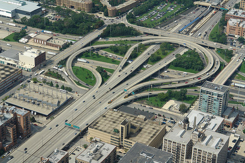

ChiTown Tattler

If every day was like this while driving through the Circle Interchange, life as a Chicago commuter would be a dream.
But let's face it, this image is the only living proof that the famed cloverleaf which ranks as one of the country's most congested stretches of highway was once delay free -- at some point in time.
What we do?
Face it. Horrible drivers are a way of life in Chicago. But your husband, wife or friends can only take so much of your complaining about left-lane drivers, congestion and tailgating.
That is where we come in. Chicago Traffic Tattlers is your spot to vent, key others in on horrible drivers and check traffic hotspots.
How we do it?
Using the millions of people on Chicago highways, we should be able to identify the problem drivers, the weavers, the tailgaters, the left-lane drivers.
What will we do to them. Nothing of course. But we can all live better knowing that our fellow motorists know who they are.
What do we need?
Really we need motorists who have a camera man riding shotgun, but we'll take creative drivers who want to draw, illustrate -- heck even sculpt -- their frustrations about their daily commute.
Let's call it group therapy.